Introduction to machine learning
This work is licensed under a Creative Commons Attribution 4.0 International License.
Learning objectives
After this lecture, you should be able to:
- interpret Mitchell’s definition of machine learning in terms of data, tasks, and performance measures, and outline the iterative workflow from problem definition to deployment;
- distinguish parametric from non-parametric models and deterministic from probabilistic predictions, using representative examples;
- compare regular grids, random sampling, Latin hypercube sampling, Sobol sequences, and adaptive sampling in terms of coverage, randomization, and sampling cost;
- explain why normalization matters, apply min–max scaling and standardization, and relate physical scaling and floating-point precision to numerical behavior;
- design physically and mathematically motivated features, check their availability in the target application, and explain common feature-selection strategies and their limitations;
- formulate a supervised dataset, a neural-network mapping, predictions, and a training objective, and describe an MLP and its gradient-descent update;
- explain the roles of seeds and repeated training runs in reproducibility and fair comparisons of model architectures;
- interpret box plots, residual plots, error histograms, and feature-space heat maps, distinguishing observed errors and training variability from predictive uncertainty.
What is machine learning?
Tom Mitchell gives the following definition in Machine Learning (1997, Section 1.1):
A computer program is said to learn from experience E with respect to some class of tasks T and performance measure P, if its performance at tasks in T, as measured by P, improves with experience E.
Source: Tom M. Mitchell, Machine Learning, McGraw-Hill, 1997.
The definition becomes more concrete when connected to quantities used in practice:
| Concept | Practical interpretation |
|---|---|
| Learning | Automation by optimization: a model and an objective are specified, and an algorithm adjusts the model to improve its performance. |
| Experience \(E\) | The data from which the model learns, such as measurements, simulation results, or observations collected through interaction with an environment. |
| Tasks \(T\) | The aim of the model: what should it predict or do, and under which conditions? |
| Performance measure \(P\) | A quantitative criterion for judging how well the model performs. During training, the optimization objective is usually expressed through a loss function to minimize. |
The performance measure and training loss are closely related, but need not be identical. For example, a model might be trained by minimizing its mean squared prediction error, while its performance is evaluated using the fraction of predictions within an application-specific tolerance.
Common steps in machine learning
A machine-learning application involves more than fitting a model. The following five steps provide a useful structure, with frequent iterations between them. The division into steps is somewhat subjective: a workflow can be described in finer detail or at a more abstract level. These five steps are the structure we will use in this lecture.
1. Problem definition
Problem definition establishes what a useful solution would look like before an algorithm is chosen:
- Task: What is the model’s aim? Which inputs will be available, and which outputs or decisions are required?
- Data sources: What measurements, simulations, or existing datasets are available? Do they cover the conditions in which the model will be used?
- Performance: How can performance on the task be quantified?
- Baseline: What existing solution should the model be compared with? This could be a simple empirical correlation or an established numerical method.
- Acceptance criteria: When is the model good enough? Criteria might include a maximum prediction error, a required improvement over the baseline, and a limit on evaluation time.
2. Data collection and processing
Data collection or generation provides examples representative of the intended task. Design of experiments helps select which combinations of input parameters to measure or simulate, so that the available budget is used effectively.
Quality and consistency checks belong to the data-generation process. Examples include checking units, identifying missing or invalid values, and assessing whether a simulation has converged sufficiently to provide useful reference data.
Prior knowledge can guide the construction of new input variables. This is called feature engineering. In fluid mechanics, for example, density, velocity, length, and viscosity can be combined into a Reynolds number. Later sections and the exercise will examine feature design in more detail.
Data preparation includes splitting and normalization. Normalization places variables on suitable numerical scales; specific methods are discussed later. The three subsets serve different purposes:
| Subset | Purpose |
|---|---|
| Training data | Model parameters are fitted by optimizing the training objective. |
| Validation data | Performance is monitored during training to guide choices such as hyperparameters or when to stop training. |
| Test data | The final selected model is evaluated on data that have not been used to fit parameters or make model-selection decisions. |
The data are split before normalization statistics are fitted. Statistics computed from the training subset are then used to transform all three subsets. This prevents information from the validation or test data from leaking into training. A suitable split also reflects the intended application: closely related snapshots from the same simulation may need to remain together rather than being distributed randomly across subsets.
3. Model selection and training
Model selection identifies a suitable model class, or Ansatz function, that can represent the relationship relevant to the task. Its parameters are then fitted to the training data by optimizing the loss function.
Model selection and training also involve choosing and tuning hyperparameters. These are settings that control the model structure or training procedure, rather than parameters fitted by the training algorithm. For example, polynomial coefficients are fitted parameters, whereas the polynomial degree is a hyperparameter. Other examples include the learning rate and the number of layers in a neural network.
Candidate settings are compared using the validation data. The test data remain reserved for the final evaluation.
4. Performance evaluation
The selected model is evaluated on unseen test data using the performance measures and acceptance criteria defined in step 1. Comparison with the baseline solution shows whether the model offers an improvement.
Inspection of the prediction errors complements aggregate scores. Where does the model perform well, and where does it struggle? For a fluid-mechanical model, errors plotted against Reynolds number or flow regime may reveal weaknesses that are hidden by a single average error.
These steps are iterative. Poor performance may motivate changes to the data collection, feature design, model class, or even the problem definition. For example, large errors in a sparsely sampled parameter range may motivate additional simulations in step 2. Validation data support this development loop. If test results are used to guide further changes, that test set has become part of model development; a fresh, untouched test set is needed for an independent final evaluation.
5. Deployment
Once the model meets the acceptance criteria, it can be integrated into the target application, such as a post-processing tool or a CFD solver. Deployment includes checking its behavior in that application and monitoring whether new inputs remain within the conditions for which its performance has been established. New data or changing requirements may trigger another iteration of the workflow.
Common model categories
Models can be categorized according to different properties. Two useful distinctions concern how their representation is specified and how their predictions are expressed. These distinctions are independent: a parametric model can be deterministic or probabilistic, and the same is true of a non-parametric model.
Parametric and non-parametric models
A parametric model has fixed model complexity for a chosen model structure: its representation is described by a fixed, finite number of parameters. This number does not increase with the number of training samples. Training determines the parameter values.
Examples include:
- Linear regression: a linear relationship is represented by a fixed set of coefficients, such as a slope and an intercept for a single input variable.
- Polynomial regression with a fixed degree: a polynomial of degree \(d\) in one variable has \(d+1\) coefficients, regardless of how many samples are available.
- A neural network with a fixed architecture: the number of weights and biases is determined by its layers and their sizes. Even a very large network is parametric when its architecture is fixed.
A non-parametric model is not restricted to a representation with a fixed, finite number of parameters independent of the dataset size. Its representation or effective complexity can grow as more training data become available.
Examples include:
- \(k\)-nearest-neighbor regression: predictions are obtained from nearby stored training samples. The stored representation grows with the dataset rather than being compressed into a fixed set of fitted coefficients.
- Decision trees whose size is allowed to grow with the data: additional splits and leaves can represent increasingly detailed relationships. A tree constrained in advance to a fixed maximum size has limited capacity, so the growth condition matters for this distinction.
- Gaussian-process regression: a distribution over functions is updated using the training observations. In its standard exact formulation, prediction depends on a representation whose size grows with the number of observations.
Non-parametric does not mean without parameters or without assumptions. A decision tree has split thresholds and leaf values, and a Gaussian process has a covariance function with hyperparameters. The distinction concerns whether the model representation is fixed in size independently of the amount of data.
Deterministic and probabilistic models
Here, the distinction concerns the prediction represented by the model, rather than whether its training algorithm uses randomness.
A deterministic predictive model assigns a single output to a given input once the fitted model is fixed. In regression, this is a point prediction, written as \(\hat{y}=y_\theta(\mathbf{x})\), where \(y_\theta\) denotes the fitted model. The model does not itself provide a probability distribution describing possible target values.
Examples include:
- A fitted polynomial used for point prediction: each Reynolds number is mapped to one predicted drag coefficient.
- A standard feed-forward neural network used for point regression: fixed weights and biases map each input to a single output during inference.
- \(k\)-nearest-neighbor regression using the mean target value of the neighbors: a fixed dataset and a fixed rule for resolving ties give one prediction per input.
A probabilistic predictive model represents possible outcomes through a probability distribution, such as \(p(y\mid\mathbf{x},\mathcal{D})\), where \(\mathcal{D}\) denotes the training data. For regression, this can describe a range of plausible target values; for classification, it assigns probabilities to the possible classes.
Examples include:
- Logistic regression: the model assigns probabilities to two classes, for example the probability that a flow belongs to a specified regime.
- Bayesian linear regression: a probability distribution over regression coefficients is updated from the data and used to obtain a predictive distribution.
- Gaussian-process regression: predictions include a predictive mean and variance, describing uncertainty under the model’s assumptions.
A probabilistic model can still provide a single reported prediction, such as its predictive mean or its most probable class. Conversely, random initialization or randomized training does not by itself make a model’s predictions probabilistic. A neural network trained with random initialization may still return only a deterministic point prediction after training. Probability estimates also require evaluation: a probabilistic formulation alone does not guarantee reliable uncertainty estimates. The distinction between point predictions and predictive distributions is discussed further in Rasmussen and Williams, Gaussian Processes for Machine Learning.
Design of experiments
Design of experiments (DoE) is the systematic planning and selection of “experiments” to efficiently explore how input variables influence output variables. Here, an experiment can be a physical measurement or a numerical simulation. Each experiment corresponds to a combination of input parameters and provides observations of the resulting outputs.
For example, the inputs might be the Reynolds number and the angle of attack of an airfoil, while the output is its lift coefficient. The sampling design determines which combinations are measured or simulated.
Space-filling and unbiased designs
Two useful principles for exploring a parameter space are:
- Space-filling: samples cover the parameter domain broadly, with few large gaps or unnecessary clusters. Coverage matters because an unexplored region may contain behavior that the model cannot infer from other regions.
- Unbiased sampling: in the uniform-sampling sense used here, no part of the chosen parameter domain is preferentially sampled. Uniform sampling gives equally sized regions of the parameter space the same probability of being sampled.
This meaning of unbiased concerns the sampling distribution, rather than the statistical bias of a fitted model or estimator. It also depends on the chosen coordinates: uniform sampling of Reynolds number differs from uniform sampling of its logarithm. Other applications may deliberately use a non-uniform distribution.
The two-dimensional sampling sketches use two normalized parameters, \(X_1\) and \(X_2\), each ranging from zero to one. The regular-grid and random designs each contain 16 samples. The LHS construction uses four samples to make the pairing visible, while the Sobol construction shows growing sets of 4, 8, and 16 samples. These sampling-layout sketches illustrate input selection only. The separate one-dimensional aliasing example below also shows a synthetic output function.
Uniform segmentation: a regular grid
A regular grid divides each parameter range into equally sized segments. An experiment is placed at every combination of segment centers, producing a Cartesian grid.
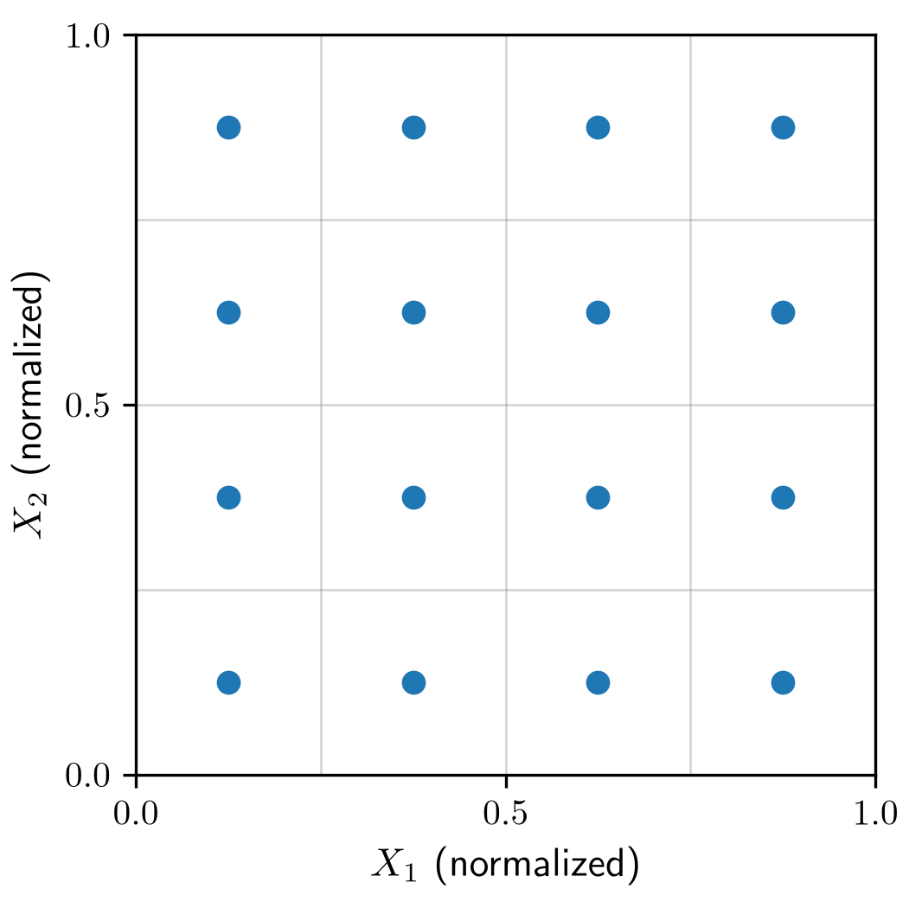
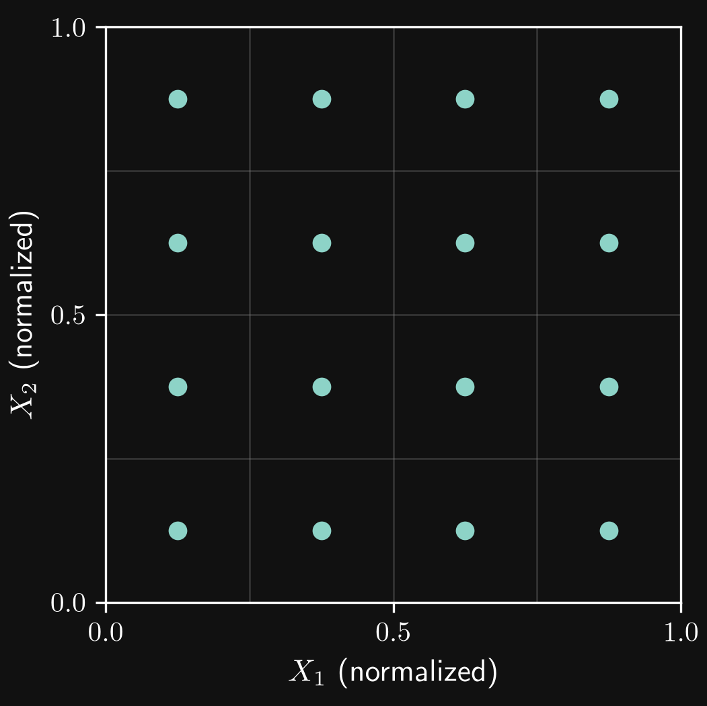
- Space-filling: the grid provides regular coverage at its chosen resolution.
- Sampling bias: once the grid is fixed, its locations are predetermined. Off-grid regions cannot be selected, so this is not an unbiased random design in the sense defined above. This does not by itself imply that every estimate obtained from a grid is statistically biased.
- Efficiency: with \(m\) locations along each of \(d\) parameters, the sample count is \(N=m^d\). The exponential growth makes grids expensive in high dimensions: ten locations per parameter require 100 experiments in two dimensions, but one million in six dimensions.
Example: regular coverage can conceal a varying response
A regular grid can cover the input range evenly while missing important variation in the output. The deliberately simple example below uses \(y=\sin(x)\) over \(0\leq x\leq20.2\pi\). Eleven equally spaced samples occur at \(x_k=2.02\pi k\), for \(k=0,\ldots,10\). The spacing is slightly larger than the period \(2\pi\), so each observation occurs a little later in the sine cycle. The observed values are \(y_k=\sin(0.02\pi k)\): they suggest a slowly increasing, approximately linear trend instead of revealing the repeated oscillations. The samples therefore conceal the oscillatory dependence, even though they span the entire input range. This alignment between the sampling interval and the response is an example of aliasing.
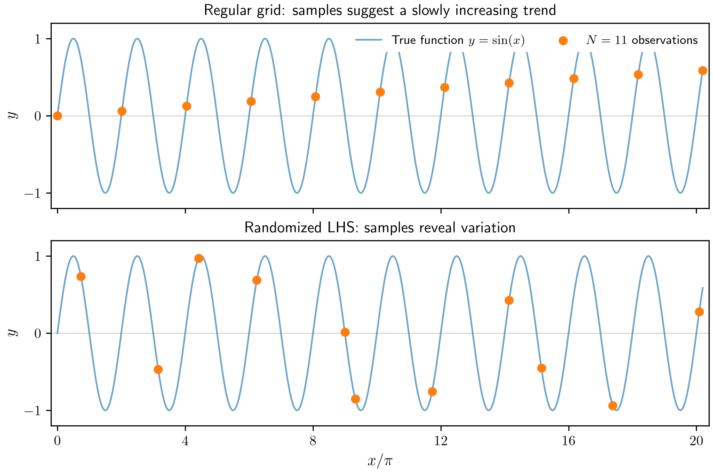
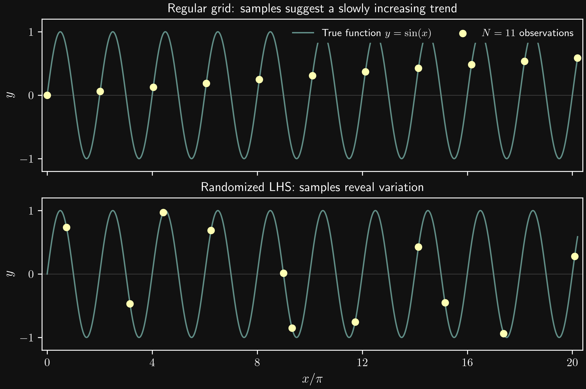
Both designs use the same number of observations. In this realization, randomized LHS breaks the systematic alignment and reveals variation in the response. The continuous reference curve represents the known synthetic function; in a real experiment, only the sampled outputs would be available.
Randomization reduces the risk of systematic alignment, but it does not guarantee that a small dataset resolves all important behavior. The LHS observations here do not by themselves establish the number or shape of the oscillations. Space-filling describes input coverage; adequate resolution of the response also depends on how it varies.
Independent uniform random sampling
Independent random sampling draws each experiment from a uniform distribution over the parameter domain.
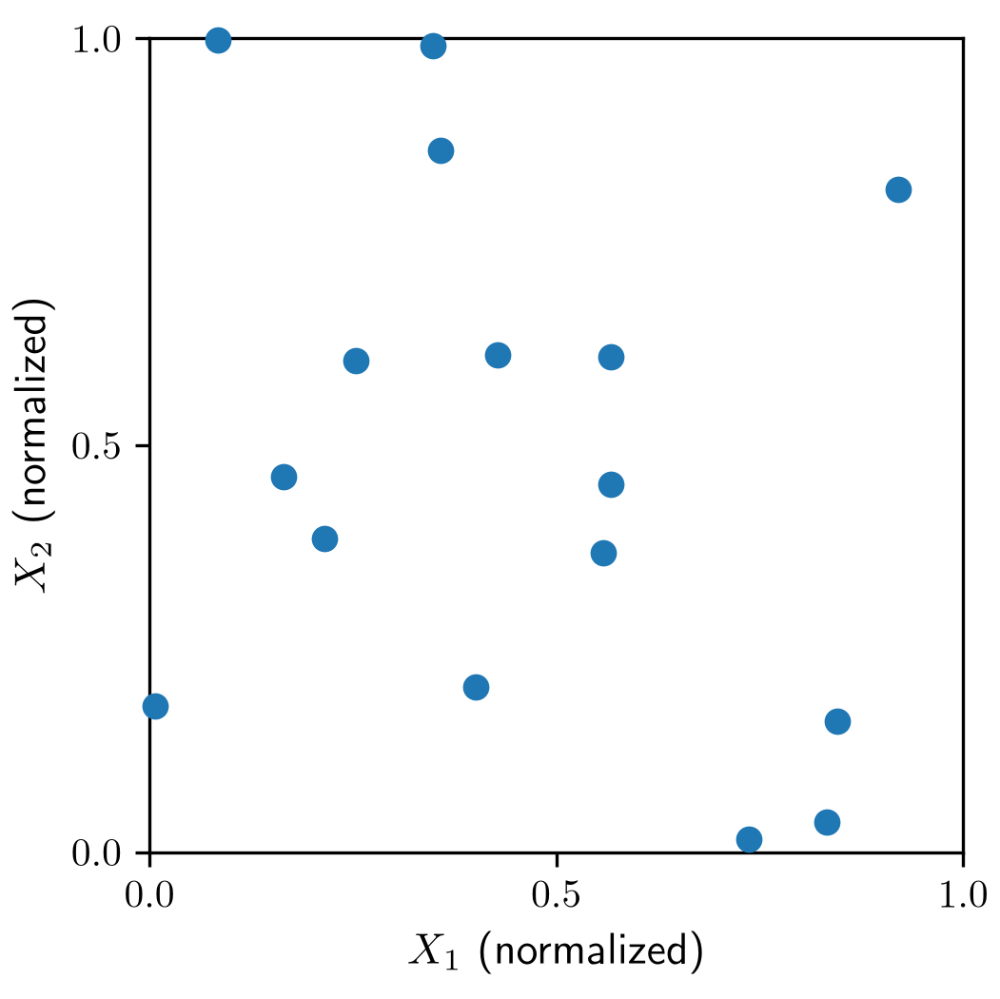

- Unbiased: equal-volume regions have equal selection probability.
- Space-filling: a finite random sample can contain clusters and large gaps. Uniform probability does not guarantee uniform coverage in a particular realization.
- Efficiency: any sample count is possible, but broad coverage may require many experiments. Closely spaced samples can provide similar information while other regions remain unexplored. Generating random inputs is cheap; the potential inefficiency concerns the measurements or simulations needed for coverage.
Latin hypercube sampling
Latin hypercube sampling (LHS) combines random sampling with stratification along each input coordinate. For \(N\) experiments in two dimensions, the construction consists of three steps:
- Each of the \(X_1\) and \(X_2\) ranges is divided into \(N\) equal segments.
- One value is drawn uniformly at random from each segment of each parameter.
- The sampled values are paired using a random permutation, giving \(N\) combinations of \(X_1\) and \(X_2\).
Thus, each horizontal and each vertical strip contains exactly one experiment. There is no requirement to sample every cell of the \(N\times N\) grid.
The following sketch uses four samples to keep the three-stage construction and the pairing of values easy to follow. The regular-grid and random-sampling sketches use 16 samples; LHS can likewise be constructed with 16 samples or another chosen sample count.
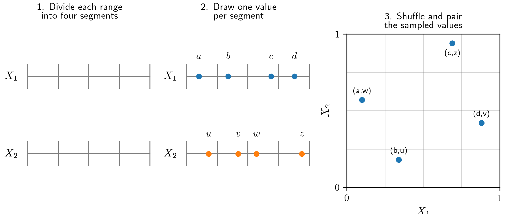
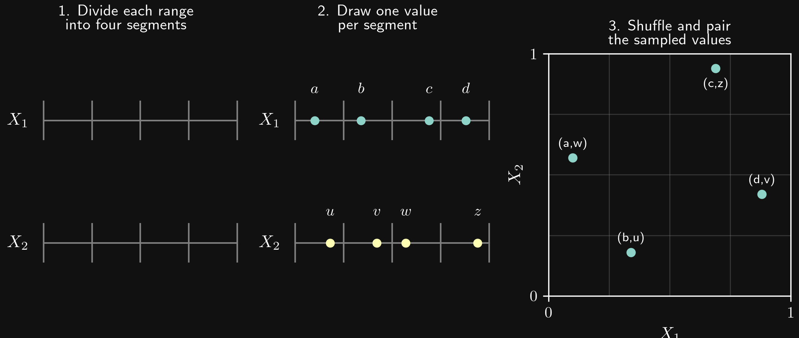
- Unbiased: across repeated generations of the randomized design, each individual experiment can fall anywhere in the domain without favoring a particular region. Equally sized regions have the same probability of containing that experiment. However, the experiments constrain one another: once a sample occupies a particular segment of \(X_1\), no other sample can use that segment; the same applies to \(X_2\). For example, with four samples, each parameter range is divided into four segments. If one sample uses the lowest \(X_1\) segment, the other three must use the remaining segments. The locations are therefore random but coordinated to improve coverage, rather than independent.
- Space-filling: coverage is guaranteed in each one-dimensional projection. This often improves coverage compared with independent random sampling, but does not guarantee that all multi-dimensional gaps are small.
- Efficiency: only \(N\) experiments are required, regardless of the number of parameters. More dimensions do not force a Cartesian product of samples, although adequate coverage can still require a larger budget.
An alternative: Sobol sequences
A Sobol sequence is a low-discrepancy sequence: its points are constructed so that the fraction falling in suitable subregions closely matches those regions’ volume fractions. This reduces gaps and clustering compared with independent random sampling.
The construction can be summarized in three steps:
- Represent the sample index in binary. Each experiment is assigned an index whose binary digits determine its coordinates. The implementation illustrated below uses a Gray-code ordering, in which successive encoded indices differ by one bit.
- Construct coordinated coordinates. Each parameter uses a prescribed set of binary fractions, called direction numbers. These are combined using binary operations to distribute the points across the domain.
- Extend the sequence. Additional points follow the same rule. Sample counts of \(2^m\), such as 16, 32, or 64, preserve the sequence’s balance properties.
The intuition is that Sobol sequences coordinate coverage across several resolutions, using subdivisions into halves, quarters, eighths, and so on. They do not explicitly search for the largest remaining gap. Mathematical details are available in the Joe–Kuo notes on generating Sobol sequences.
A binary fraction uses powers of two for its digit positions, just as a decimal fraction uses powers of ten. After the decimal point, the positions represent \(1/10\), \(1/100\), and so on. After the binary point, they represent
\[ \frac{1}{2},\quad \frac{1}{4},\quad \frac{1}{8},\quad \frac{1}{16},\ldots \]
Each binary digit is either zero or one. For example,
\[ (0.10)_2=1\cdot\frac{1}{2}+0\cdot\frac{1}{4}=0.5, \]
\[ (0.01)_2=0\cdot\frac{1}{2}+1\cdot\frac{1}{4}=0.25, \]
\[ (0.11)_2=1\cdot\frac{1}{2}+1\cdot\frac{1}{4}=0.75. \]
The subscript \(2\) indicates binary notation. Thus, \((0.10)_2\) means one half, whereas decimal \(0.10\) means one tenth. More generally, a binary fraction with digits \(b_1,b_2,\ldots\) has the value
\[ (0.b_1b_2b_3\ldots)_2=\sum_{k=1}^{\infty}b_k\,2^{-k}. \]
The index encoding for the first four points is:
| Sample index \(n\) | Binary representation | Gray code |
|---|---|---|
| 0 | 00 | 00 |
| 1 | 01 | 01 |
| 2 | 10 | 11 |
| 3 | 11 | 10 |
For the first sample, \(n=0\), both the binary representation and the Gray code are \(00\). No direction numbers are selected, so both coordinates are zero: \((X_1,X_2)=(0,0)\). This is the point at the lower-left corner of each grid in the sketch. It belongs to the unscrambled sequence shown here; scrambling generally moves the first point away from the origin.
For example, the index \(n=2\) has Gray code \(11\), so both of the first two direction numbers contribute to each coordinate. For the two-dimensional sequence shown here, this gives
\[ X_1=(0.10)_2\oplus(0.01)_2=(0.11)_2=0.75, \]
\[ X_2=(0.10)_2\oplus(0.11)_2=(0.01)_2=0.25. \]
The subscript \(2\) denotes a binary fraction, and \(\oplus\) denotes bitwise exclusive OR (XOR): equal bits give zero, and different bits give one. Each coordinate uses its own direction numbers. The resulting third point, counting from \(n=0\), is \((X_1,X_2)=(0.75,0.25)\).
The following sketch shows how the point set grows. Previously sampled points are retained, and the newly added points are highlighted.
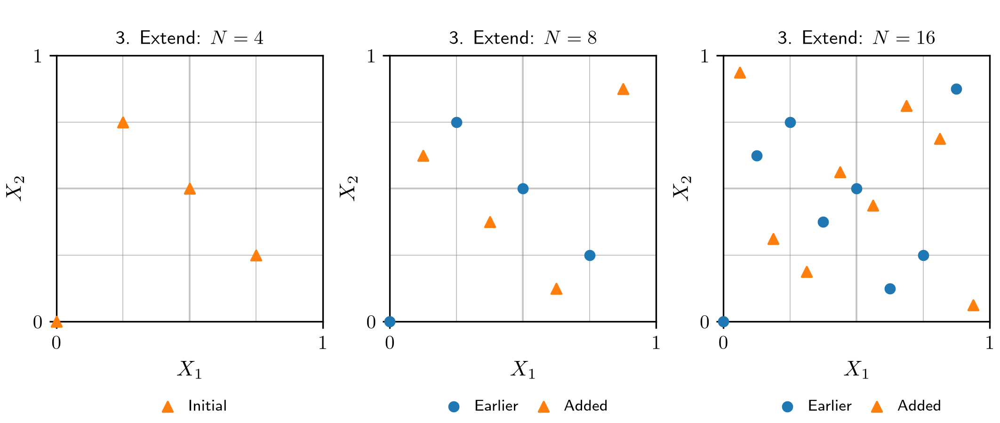
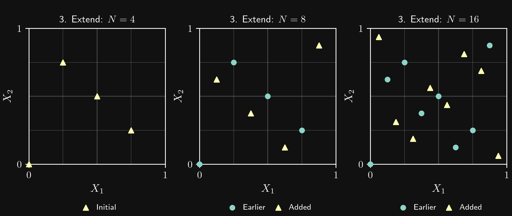
Unlike LHS, which enforces one sample per interval along each coordinate for a chosen sample count, Sobol sequences use a structured construction to balance coverage across multiple dimensions. An existing sequence can be extended; complete sets of \(N=2^m\) points preserve its standard balance properties.
An unscrambled Sobol sequence is deterministic. Scrambling randomizes the binary digits used to construct its coordinates while preserving the sequence’s structured coverage. It changes the sample locations, rather than merely their order. Different random seeds produce different point sets with similar space-filling properties. For example, the first point of the unscrambled sequence is \((0,0)\), whereas scrambling generally moves it elsewhere in the domain.
Randomized scrambling gives each point a uniform distribution over the domain, although the points remain dependent, as in randomized LHS. Repeating a calculation with independently scrambled sequences can help estimate uncertainty in a computed average or integral. Sobol designs can use a sampling budget efficiently, but neither they nor LHS eliminate the difficulty of covering a high-dimensional domain.
Adaptive sampling
Adaptive sampling uses the outputs of completed experiments to select later inputs. This can be particularly efficient when experiments are expensive and some regions are more informative than others. It is a powerful approach rather than a universal gold standard: its benefit depends on the task, the quality of the uncertainty model, and the cost of selecting new samples.
A typical uncertainty-driven workflow is:
- An initial design is generated, for example using randomized LHS or a scrambled Sobol sequence, and the corresponding experiments are performed.
- A surrogate model approximates the input–output relationship and estimates predictive uncertainty across the parameter domain.
- The next experiment is selected where its observation is expected to reduce uncertainty most effectively, for example by reducing uncertainty integrated over the domain.
- The new observation is added to the dataset, the surrogate and its uncertainty estimate are updated, and sample selection is repeated until the budget or an acceptance criterion is reached.
The aim is to reduce uncertainty after observing the new output. Sampling where current uncertainty is already smallest would usually add little information. Adaptive designs deliberately concentrate samples according to their objective, so they generally do not preserve uniform, unbiased sampling of the domain.
Bayesian optimization is a related example of adaptive sampling. A probabilistic surrogate and an acquisition function guide the search for a good objective value, balancing exploration of uncertain regions with exploitation of promising regions. For broad parameter-space exploration, uncertainty reduction is more directly associated with active learning or Bayesian experimental design. The distinction is the selection objective: learning the response throughout the domain versus finding an optimum.
Data normalization
Why is data normalization important?
Features and targets often have very different numerical scales. Data normalization rescales these quantities so that typical values, variations, or both are of order one. Depending on the method, this may also involve centering the data. The aim is a useful numerical representation, rather than forcing every individual value to be close to one.
Normalization can support several aspects of a learning problem:
- Numerical stability: suitable scaling can reduce the impact of round-off errors and improve the condition number of matrices involved in fitting a model. A lower condition number means that a problem is less sensitive to small perturbations in its inputs. Scaling does not cure every source of ill-conditioning, such as nearly redundant features.
- Less hyperparameter tuning: comparable feature and target scales can make settings such as the learning rate easier to choose and reuse across problems. Normalization reduces sensitivity to scale; it does not eliminate the need for tuning.
- Comparable contributions of features: in distance-based methods such as clustering, scaling prevents a feature from dominating solely because its numerical values are larger. The choice of scaling still expresses a choice about what constitutes similarity.
- Comparable numerical experiments: loss values are easier to compare when the same target normalization, loss definition, and evaluation data are used. A change in target scale changes a squared-error loss quadratically, so a smaller loss alone need not mean a better physical prediction.
Common normalization methods
The following transformations can be applied separately to each feature and, where appropriate, each target. For transformations based on dataset statistics, these statistics are computed from the training data only and then reused unchanged for validation, test, and deployment data. Predictions are transformed back to physical units for application-level evaluation.
Min–max normalization
For a variable \(x\), min–max normalization maps its observed training range to \([0,1]\):
\[ \widetilde{x}=\frac{x-x_{\min}}{x_{\max}-x_{\min}}. \]
An alternative maps the same range to \([-1,1]\):
\[ \widetilde{x}=2\frac{x-x_{\min}}{x_{\max}-x_{\min}}-1. \]
The choice depends on the problem and model. Both transformations are sensitive to outliers: a single extreme value can compress most observations into a small part of the normalized range. New observations outside the training range can produce normalized values outside the chosen interval.
Zero mean and unit standard deviation
Standardization centers a variable using its training mean \(\mu_x\) and scales it by its training standard deviation \(\sigma_x\):
\[ \widetilde{x}=\frac{x-\mu_x}{\sigma_x}. \]
The transformed training variable has zero mean and unit standard deviation. Values are not restricted to a fixed interval, and standardization does not make an arbitrary distribution Gaussian. Unlike min–max scaling, standardization uses statistics of the entire training dataset rather than its two extreme values. With a small fraction of outliers, it can therefore preserve more of the spread of the main data cloud instead of compressing it into a narrow part of a fixed interval. However, sufficiently extreme outliers can still shift the mean and inflate the standard deviation, compressing the remaining observations. Standardization is thus often less affected in practice, but is not outlier-robust in the statistical sense.
Scaling with physical relations
Physical knowledge can provide characteristic scales for both features and targets. For spatial position \(\mathbf{r}\), characteristic length \(L\), velocity \(U\), density \(\rho\), and time scale \(T=L/U\), examples are
\[ \widetilde{\mathbf{r}}=\frac{\mathbf{r}}{L},\qquad \widetilde{t}=\frac{t}{T},\qquad \widetilde{\mathbf{u}}=\frac{\mathbf{u}}{U},\qquad \widetilde{p}=\frac{p-p_{\mathrm{ref}}}{\rho U^2}. \]
Such non-dimensionalization connects numerical scaling to physical similarity. A force target can likewise be represented by a force coefficient. Characteristic scales are chosen to reflect the relevant flow, so that typical dimensionless quantities are of order one; this is not guaranteed by removing units alone. Physical scaling and statistical normalization can also be combined when useful.
Optional detour: floating-point representation
Computers represent real numbers with finite precision. The IEEE 754 binary floating-point formats encode a sign bit \(s\), an exponent field \(e\), and fraction bits \(b_1,\ldots,b_p\). A normal finite number has the form
\[ x=(-1)^s\left(1+\sum_{k=1}^{p}b_k2^{-k}\right)2^{e-B}, \]
where \(B\) is the exponent bias. The leading one is implicit. The exponent provides the range of magnitudes, while the significand provides the significant digits. Special encodings represent zero, subnormal numbers near zero, infinities, and NaN (not a number).
| Property | Single precision (float32, binary32) |
Double precision (float64, binary64) |
|---|---|---|
| Total bits | 32 | 64 |
| Sign / exponent / stored fraction bits | 1 / 8 / 23 | 1 / 11 / 52 |
| Exponent bias \(B\) | 127 | 1023 |
| Significand precision, including the leading bit | 24 binary digits | 53 binary digits |
| Approximate decimal precision | 7 significant digits | 16 significant digits |
| Machine epsilon \(\epsilon\) | \(2^{-23}\approx1.19\times10^{-7}\) | \(2^{-52}\approx2.22\times10^{-16}\) |
Here, machine tolerance refers to machine epsilon: the gap between \(1\) and the next larger representable number, \(1+\epsilon\). It describes the resolution near one, rather than a universal error bound or a guarantee of an exact result. Under rounding to nearest, sufficiently small increments are lost: in single precision, for example, \(1+10^{-8}\) rounds to \(1\). The spacing between representable values changes with magnitude.
Most decimal fractions also require rounding when represented in binary. Arithmetic operations can therefore introduce round-off errors, and adding a small quantity to a much larger one can lose the small contribution.
The data type is chosen consciously for the problem. CFD calculations may need double precision to resolve small residuals, accumulated updates, or differences between large terms. Many ML and post-processing tasks can use single precision with lower storage and potentially faster arithmetic, depending on the hardware. Neither application category alone determines the necessary precision: the relevant scales, algorithm, and accuracy requirements matter. NumPy’s finfo reports these format properties.
Example 1: fitting a fourth-order polynomial
A polynomial regression problem illustrates how scaling and finite precision interact. The input lies in \(-10^{-2}\leq x\leq10^{-2}\), the target lies in \(1\leq y\leq10\), and the model is
\[ y_{\theta}(x)=ax^4+bx^3+cx^2+dx+e,\qquad \theta=(a,b,c,d,e). \]
For the sake of this argument, the coefficients are fitted by gradient descent in single precision, minimizing the mean squared error below. This is one possible fitting method: because the polynomial is linear in its coefficients, they can also be determined by solving a linear least-squares problem using matrix methods, such as QR factorization or singular value decomposition. An inverse-based expression is possible when the relevant matrix is nonsingular, although explicitly forming the inverse is generally unnecessary. The training objective is
\[ \mathcal{L}(\theta)=\frac{1}{N}\sum_{i=1}^{N}\bigl(y_{\theta}(x_i)-y_i\bigr)^2. \]
Suppose the initial coefficients are of order one, as can occur with a random initialization. What problems can arise when the polynomial features have very different scales?
| Polynomial feature | Maximum magnitude over the input range |
|---|---|
| \(1\) | \(1\) |
| \(x\) | \(10^{-2}\) |
| \(x^2\) | \(10^{-4}\) |
| \(x^3\) | \(10^{-6}\) |
| \(x^4\) | \(10^{-8}\) |
The fourth-order contribution \(ax^4\) is then of order \(10^{-8}\) or smaller, while the constant term \(e\) is of order one. Near one, the spacing of single-precision numbers is approximately \(1.19\times10^{-7}\). For example, with \(a=e=1\) and \(x=10^{-2}\),
\[ e+ax^4=1+10^{-8} \]
rounds to \(1\) in single precision. The fourth-order contribution is lost when added to the constant term, even though \(10^{-8}\) itself is representable. This is a round-off effect caused by combining different scales, rather than an inability to store a small number.
The gradients also inherit the feature scales. With residual \(r_i=y_{\theta}(x_i)-y_i\),
\[ \frac{\partial\mathcal{L}}{\partial a}=\frac{2}{N}\sum_i r_i x_i^4, \qquad \frac{\partial\mathcal{L}}{\partial e}=\frac{2}{N}\sum_i r_i. \]
Updates to the fourth-order coefficient can therefore be much smaller than updates to the constant term. A single learning rate may produce very uneven progress, and sufficiently small coefficient updates can themselves be rounded away. Poor scaling also affects the conditioning of the polynomial regression matrix. These optimization and conditioning issues exist even before finite-precision effects are considered; loss of a small contribution in the forward calculation does not imply that its analytically computed gradient is necessarily zero.
A centered min–max transformation gives
\[ \widetilde{x}=\frac{x}{0.01},\qquad \widetilde{y}=\frac{y-5.5}{4.5}. \]
Both variables now lie in \([-1,1]\) over the stated ranges. Constructing the polynomial features after normalizing the input gives the model
\[ \widetilde{y}_{\widetilde{\theta}}(\widetilde{x})=\widetilde{a}\widetilde{x}^4+\widetilde{b}\widetilde{x}^3+\widetilde{c}\widetilde{x}^2+\widetilde{d}\widetilde{x}+\widetilde{e}. \]
Here
\[ \widetilde{\theta}=(\widetilde{a},\widetilde{b},\widetilde{c},\widetilde{d},\widetilde{e}). \]
All feature columns can now reach magnitudes of order one, reducing their scale disparity and making a common learning rate more practical. Powers still become small near zero, and polynomial features can remain correlated. Normalization improves the numerical representation; it does not eliminate round-off errors or guarantee good conditioning.
Example 2: comparable features in clustering
We consider lift measurements of an airfoil section at varying Reynolds numbers. The aim is to group the measurements according to characteristic flow states, using similarities in the measured lift response as an indication of potentially similar flow behavior. Such groups could help identify candidate flow states for further physical investigation.
Each of the following three measurements contains a Reynolds number and a section lift coefficient:
| Measurement \(i\) | \(\mathrm{Re}\) | \(c_L\) |
|---|---|---|
| 1 | \(10\times10^6\) | 0.50 |
| 2 | \(12\times10^6\) | 0.20 |
| 3 | \(15\times10^6\) | 0.10 |
How might these measurements be grouped into two clusters? The similar, smaller lift coefficients suggest grouping measurements 2 and 3, separately from measurement 1. This is a plausible interpretation of the observed response, rather than proof that the two measurements share the same flow regime.
An algorithm requires a quantitative definition of similarity. For feature vectors \(\mathbf{z}_i=(\mathrm{Re}_i,c_{L,i})\), the Euclidean distance is
\[ d_{ij}=\lVert\mathbf{z}_i-\mathbf{z}_j\rVert_2 =\sqrt{(\mathrm{Re}_i-\mathrm{Re}_j)^2+(c_{L,i}-c_{L,j})^2}. \]
The raw distances are approximately
| Pair | Euclidean distance before normalization |
|---|---|
| 1–2 | \(2\times10^6\) |
| 1–3 | \(5\times10^6\) |
| 2–3 | \(3\times10^6\) |
Thus, measurements 1 and 2 form the closest pair, contrary to the intuitive grouping of measurements 2 and 3 based on their similar lift coefficients. The Reynolds-number differences dominate the distance almost entirely, despite both features already being dimensionless.
With min–max scaling of each column to \([0,1]\), the values become
| Measurement \(i\) | \(\widetilde{\mathrm{Re}}\) | \(\widetilde{c}_L\) |
|---|---|---|
| 1 | 0 | 1 |
| 2 | 0.4 | 0.25 |
| 3 | 1 | 0 |
For this small illustrative dataset, all three observations define the scaling range; a predictive workflow would instead obtain scaling statistics from its training subset. The resulting distances are
| Pair | Euclidean distance after normalization |
|---|---|
| 1–2 | \(\sqrt{0.4^2+0.75^2}=0.85\) |
| 1–3 | \(\sqrt{2}\approx1.414\) |
| 2–3 | \(\sqrt{0.6^2+0.25^2}=0.65\) |
Measurements 2 and 3 now form the closest pair, consistent with the initial interpretation based on their lift coefficients. Normalization gives the observed ranges of both features comparable influence. It does not establish a uniquely correct clustering: the meaningful weighting of Reynolds number and lift coefficient still depends on the physical question.
Feature design and selection
Some features are naturally given by a problem, such as a Reynolds number, a wall-normal coordinate, or a measured velocity. Feature design, also called feature engineering, derives new variables from these quantities. A suitable representation can make a relationship easier to learn, allowing a more accurate model or a simpler model that requires less data and computation. The benefit depends on the task and is assessed through validation.
Goals of feature design
Embedding mathematical constraints
A transformation can enforce a mathematical property of a feature. For example, the sigmoid function maps any finite real input \(z\) into the interval \((0,1)\):
\[ \sigma(z)=\frac{1}{1+\exp(-z)}. \]
For a positive maximum scale \(M\), the feature \(M\sigma(z)\) lies between zero and \(M\). This provides a bounded input representation. The bounds are approached asymptotically; finite-precision calculations may round to an endpoint.
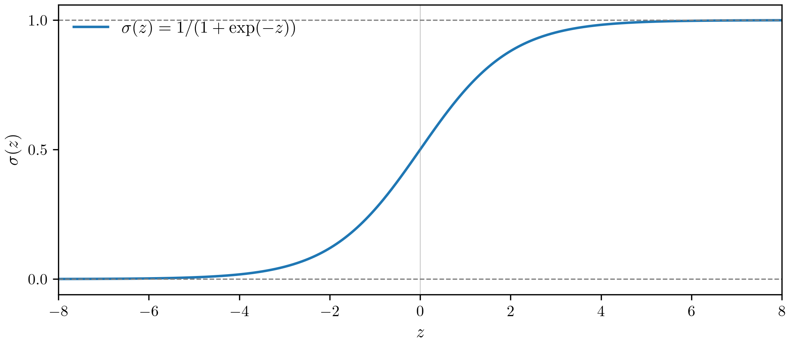
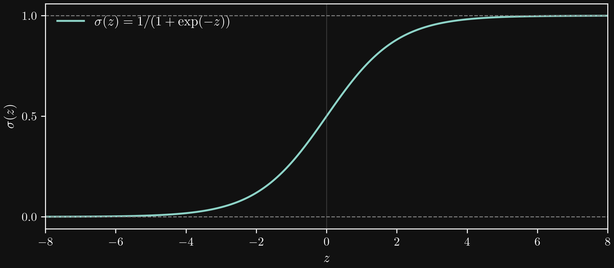
Bounding an input feature does not automatically bound the model output. If the required constraint concerns an output, it can instead be imposed through an output transformation, for example \(y_\theta(\mathbf{x})=M\sigma(g_\theta(\mathbf{x}))\), where \(g_\theta\) is an otherwise unconstrained model. Saturation near the sigmoid’s bounds also reduces sensitivity to input changes, so the transformation is chosen with the relevant range in mind.
Embedding known physical relationships
Physical knowledge can provide a baseline relationship, leaving the model to learn a correction. For a turbulent boundary layer, the logarithmic law of the wall provides a familiar starting point within an appropriate logarithmic region:
\[ u^+=\frac{1}{\kappa_0}\ln y^+ + B_0, \qquad u^+=\frac{\overline{u}}{u_\tau}, \qquad y^+=\frac{y u_\tau}{\nu}. \]
Here \(u_\tau\) is the friction velocity, \(\nu\) is the kinematic viscosity, and \(\kappa_0\) and \(B_0\) are reference constants. A candidate model for pressure-gradient effects could make the effective coefficients functions of a dimensionless pressure-gradient descriptor \(\beta\):
\[ u^+_\theta(y^+,\beta)=\frac{1}{\kappa_\theta(\beta)}\ln y^+ + B_\theta(\beta). \]
For example, in an attached boundary layer, a commonly used descriptor is \(\beta=(\delta^*/\tau_w)\,\mathrm{d}p_e/\mathrm{d}x\), with displacement thickness \(\delta^*\), wall shear stress \(\tau_w\), and edge pressure \(p_e\). A baseline-plus-correction form makes the learning task explicit:
\[ u^+_\theta=\frac{1}{\kappa_0}\ln y^+ + B_0 +\Delta A_\theta(\beta)\ln y^+ +\Delta B_\theta(\beta). \]
The model learns deviations from the reference profile rather than a velocity profile from scratch. The quantities \(\ln y^+\) and \(\beta\) are physically motivated features. This is a modeling Ansatz, not a general law stating that pressure-gradient effects can always be absorbed into two coefficients. Its validity depends on the flow regime and region considered; near separation, wall-based scales and this pressure-gradient descriptor can become unsuitable. Other effects, including flow history, may require additional information.
Improving the distribution of samples in feature space
A feature can span several orders of magnitude. For example,
\[ \mathrm{Re}=1,\ 10,\ 100,\ 1000 \quad\longrightarrow\quad \log_{10}(\mathrm{Re})=0,\ 1,\ 2,\ 3. \]
The samples are equally spaced in the logarithmic coordinate. This transformation changes the representation of the existing samples; it does not collect new data or make an arbitrary sample distribution uniform. It is useful when relative changes or multiplicative relationships matter. A logarithm requires positive values, and its argument is dimensionless.
Simplifying variation and nonlinear relationships
Other transformations can reduce unnecessary variation or make relationships easier to represent:
- Polynomial features: replacing a scalar input \(x\) by features such as \((x,x^2,x^3)\) allows a relationship nonlinear in \(x\) to be represented by a model linear in its coefficients. Feature scaling remains important, as the preceding example shows.
- Ratios and dimensionless groups: quantities such as \(u/U\) or \(\mathrm{Re}=UL/\nu\) can combine naturally given variables into features relevant to physical similarity. Denominators need to remain meaningful over the application range.
- Trigonometric features: \((\sin\alpha,\cos\alpha)\) can represent a periodic angle without an artificial discontinuity between zero and \(2\pi\).
- Other nonlinear transformations: logarithms or physically motivated baseline corrections can simplify a response’s variation. A reduction in variance or nonlinearity is a possible benefit, rather than a property guaranteed by every transformation.
Guidelines for designing features
Units and physical meaning matter. Dimensionless quantities often provide a useful starting point and facilitate comparisons across scales. Physical dimensions must still be consistent when quantities are combined: adding a velocity directly to a pressure has no physical meaning. Non-dimensionalization removes units but does not by itself determine the appropriate weighting of features.
Features must be available in the target application. A useful training feature cannot support deployment if it requires information unavailable when the model is evaluated. This concerns both the mathematical definition of a quantity and the process used to extract it.
For example, DNS provides a velocity field resolved in space and time, whereas a RANS calculation provides a Reynolds-averaged velocity field. These quantities are not directly interchangeable merely because both are called velocity. A model intended for RANS requires training features consistent with the quantities available in RANS. This may involve averaging the DNS data first and then extracting the corresponding mean-flow features; for LES, an appropriate spatial filtering operation is needed instead. For nonlinear feature transformations, averaging and feature construction generally do not commute, so the extraction order follows the intended definition of the feature.
Spatial representation also matters. A feature construction that depends on a structured Cartesian array of DNS values may not transfer directly to an unstructured mesh in the target solver. Suitable features reflect the information and geometry available during deployment. Statistical transformations and feature-selection decisions are fitted using training and validation data, with the test set reserved for final evaluation.
Selecting useful feature combinations
Feature design may produce a large set of plausible candidates. Feature selection seeks a useful subset, balancing predictive performance, model complexity, computational cost, and availability in the target application. Selection is part of model development, rather than a decision based on the final test results.
Correlation heatmaps
A correlation heatmap summarizes pairwise correlations between features and, in supervised learning, targets. It can reveal redundant variables and strong linear associations. Weak linear correlation does not rule out a useful nonlinear relationship, and pairwise correlations do not describe all interactions between features. The heatmap provides an initial screening tool rather than a complete selection rule.
Sequential forward and backward selection
Forward selection starts with no features and adds the candidate that gives the greatest improvement in validation performance at each step. Backward selection starts with a candidate set and removes the feature whose exclusion is least harmful, or most beneficial. Both approaches compare models fitted with different subsets.
These searches can be expensive because they require repeated fitting. They are also greedy: a locally preferred choice need not identify the best overall combination, particularly when features interact.
Permutation importance
Permutation importance assesses how much a fitted model relies on a feature. Its values are randomly shuffled across observations in a validation dataset, breaking their association with the other measurements. The decrease in predictive performance indicates the feature’s importance to that particular model. Repeated shuffles help assess variation in the result.
This provides a performance-based check beyond pairwise correlation, but it is not universally more robust than other selection methods. Correlated features can substitute for one another and appear individually unimportant; shuffling can also create unrealistic feature combinations. Importance scores can guide subset selection, followed by refitting and validation of the reduced model.
Feature weighting learned during optimization
Some models learn how strongly different inputs contribute during training. For example, an attention mechanism can assign input-dependent weights to feature representations, allowing their contributions to vary with the sample. This integrates feature weighting into optimization, but does not necessarily remove features or produce a smaller input set.
Explicit selection can instead be encouraged through sparse coefficients or learned feature gates. Attention weights alone are not a reliable ranking of physical importance or evidence of a causal relationship. The resulting representation and any proposed reduction in features still require validation.
Deep learning
Neural networks are a flexible class of Ansatz functions that can be used in many different modeling contexts. Their ability to represent complex, nonlinear relationships between inputs and outputs makes them a useful starting point when simpler model forms are too restrictive. They are not a universal solution: their suitability depends on the task, the available data, and requirements such as computational cost and interpretability.
Models, datasets, and predictions
A neural network is a parameterized mapping from a feature space to a target, or label, space:
\[ \mathbf{y}_\theta:\mathbb{R}^{n_x}\longrightarrow\mathbb{R}^{n_y}, \qquad \mathbf{x}\longmapsto\mathbf{y}_\theta(\mathbf{x}). \]
Both features and targets can be vector-valued. For example, several flow descriptors might be mapped to several force coefficients. The parameter vector \(\theta\) collects the network’s trainable weights and biases. Its architecture determines how these parameters enter the mapping. Deep learning uses networks with multiple successive layers of learned representations.
In supervised learning, a dataset consists of paired observations:
\[ \mathcal{D}=\{(\mathbf{x}_i,\mathbf{y}_i)\}_{i=1}^{N}, \qquad \mathbf{x}_i\in\mathbb{R}^{n_x},\quad \mathbf{y}_i\in\mathbb{R}^{n_y}. \]
Each pair is one sample. The prediction is the Ansatz function evaluated at the sample’s features:
\[ \widehat{\mathbf{y}}_i=\mathbf{y}_\theta(\mathbf{x}_i). \]
Thus, \(\mathbf{y}_\theta\) denotes the model, \(\widehat{\mathbf{y}}_i\) its prediction at \(\mathbf{x}_i\), and \(\mathbf{y}_i\) the observed target. A prediction can also be made at a new input \(\mathbf{x}_*\) for which the target is unknown.
Training as an optimization problem
Training determines parameter values that reduce the discrepancy between predictions and observed targets. For a training dataset \(\mathcal{D}_{\mathrm{train}}\) with \(N_{\mathrm{train}}\) samples, a common regression objective is the mean squared Euclidean error:
\[ \mathcal{L}_{\mathrm{train}}(\theta) =\frac{1}{N_{\mathrm{train}}}\sum_{i=1}^{N_{\mathrm{train}}} \left\|\mathbf{y}_\theta(\mathbf{x}_i)-\mathbf{y}_i\right\|_2^2, \qquad \theta^*\in\operatorname*{arg\,min}_{\theta}\mathcal{L}_{\mathrm{train}}(\theta). \]
The squared \(L_2\) norm sums squared errors across target components. Here the averaging is over samples; a further division by \(n_y\) would average over components as well. The mathematical optimum \(\theta^*\) states the goal; a numerical training algorithm usually returns an approximate solution. Validation data guide model selection and stopping, while test data evaluate the final model.
The multilayer perceptron
A multilayer perceptron (MLP) is a feed-forward network that composes affine transformations with nonlinear activation functions. For \(L\) layers with trainable parameters, a common regression form is
\[ \mathbf{h}^{(0)}=\mathbf{x}, \]
\[ \mathbf{h}^{(\ell)}= \phi_\ell\!\left(W^{(\ell)}\mathbf{h}^{(\ell-1)}+\mathbf{b}^{(\ell)}\right), \qquad \ell=1,\ldots,L-1, \]
\[ \mathbf{y}_\theta(\mathbf{x})= W^{(L)}\mathbf{h}^{(L-1)}+\mathbf{b}^{(L)}. \]
With \(n_0=n_x\) and \(n_L=n_y\), the matrix \(W^{(\ell)}\) contains connection weights, \(\mathbf{b}^{(\ell)}\) contains biases, and \(\phi_\ell\) acts componentwise. A layer with \(n_{\ell-1}\) inputs and \(n_\ell\) outputs has \(W^{(\ell)}\in\mathbb{R}^{n_\ell\times n_{\ell-1}}\) and \(\mathbf{b}^{(\ell)}\in\mathbb{R}^{n_\ell}\). All these weights and biases belong to \(\theta\). Common activations include the sigmoid and \(\operatorname{ReLU}(z)=\max(0,z)\). Without nonlinear activations, successive affine layers collapse to a single affine mapping.
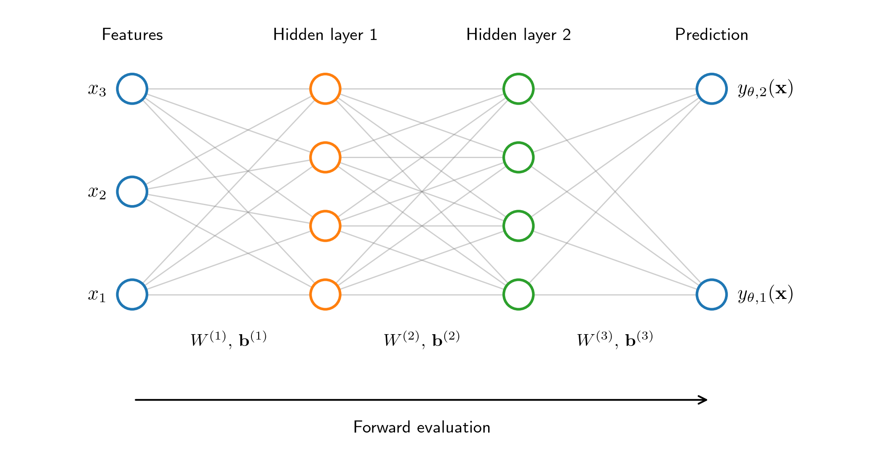
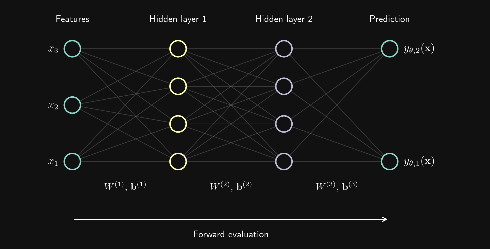
The sketch is illustrative: its layer sizes are not a recommended architecture. The output layer above is affine, suitable for unconstrained regression; other tasks may require an output transformation. The MLP illustrates the repeated combination of trainable transformations and nonlinearities found throughout neural-network modeling, although not every architecture is fully connected.
Gradient descent
Starting from initialized parameters \(\theta^{(0)}\), gradient descent uses the negative loss gradient as a local descent direction:
\[ \theta^{(k+1)}=\theta^{(k)} -\eta\,\nabla_\theta\mathcal{L}_{\mathrm{train}}(\theta^{(k)}), \qquad \eta>0. \]
The learning rate \(\eta\) controls the step size; an excessively large step can increase the loss rather than decrease it. Each iteration evaluates predictions and the loss, computes its parameter gradient, and updates the parameters. Backpropagation computes these gradients efficiently using the chain rule; it is the gradient calculation, rather than the update rule itself. At activation points that are not differentiable, such as the ReLU at zero, implementations use a specified derivative convention.
The formula uses the complete training dataset. Mini-batch methods approximate the gradient using a subset of samples at each update, reducing the cost per update and introducing variation through batch selection. Training usually involves repeated passes through the dataset, called epochs.
Training variability and repeatable comparisons
Neural-network training is generally a nonlinear, non-convex optimization problem. Different initial parameters can lead to different optimization trajectories and outcomes, even on the same dataset. Random batch ordering and changes in the training data can introduce further variability. Non-convexity alone does not make an algorithm random, but it can make its outcome sensitive to these choices.
A seed initializes a pseudo-random number generator. With the same generator, seed, and sequence of calls, the same random-number sequence is obtained. This helps reproduce initialization, shuffling, and data splits. A seed is a reproducibility setting, not a measure of model quality; numerical nondeterminism or changes in software and hardware can still affect results.
Model training is therefore treated like a numerical experiment with sources of stochastic variation. A meaningful comparison of two architectures uses multiple training runs with different seeds, comparable training budgets and tuning procedures, and a common evaluation protocol. Results include a typical performance measure, such as the mean or median, together with its spread. If sensitivity to the available data is also of interest, repeated data splits or resampling provide a separate assessment. A single favorable run is insufficient evidence that an architecture is better.
Variation between training runs is distinct from the predictive uncertainty described by a probabilistic model. A network with randomized training can still produce a deterministic prediction once its parameters are fixed.
More complex building blocks include normalization layers, which transform intermediate representations, and residual connections, which add a bypassed representation to a learned transformation. These and other architectural components are outside the scope of this introductory section.
Visualizing prediction errors and model uncertainties
A single performance score rarely reveals all strengths and weaknesses of a model. Visualizations can show how results vary between training runs, how prediction errors are distributed, and where errors occur in feature space. These are complementary views: training variability, observed prediction errors, and a probabilistic model’s predictive uncertainty describe different quantities.
The following sketches use synthetic data, not results from trained networks. The box plots contain 24 illustrative evaluation losses per architecture. The residual plot, histogram, and heat map describe the same 1200 artificial test samples, with a deliberately positive mean error and larger error variation near the lower bound of \(X_1\). Targets are dimensionless. For a scalar target, the signed error is defined as
\[ e_i=\widehat{y}_i-y_i=y_\theta(\mathbf{x}_i)-y_i. \]
Box plots: variation between training runs
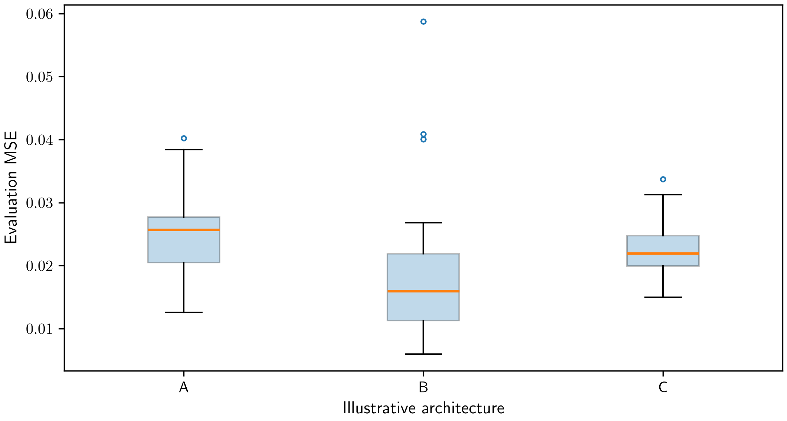

When training is repeated with different seeds, a box plot summarizes the distribution of a chosen performance measure, such as evaluation mean squared error. Comparing architectures then involves both typical performance and variability, rather than only the best run.
In the conventional box plot used here:
- The median line marks the 50th percentile: half the observations lie on either side, allowing for ties.
- The box extends from the first quartile \(Q_1\) (25th percentile) to the third quartile \(Q_3\) (75th percentile). Its height is the interquartile range, \(\mathrm{IQR}=Q_3-Q_1\).
- The whiskers extend to the most extreme observed values within \(1.5\,\mathrm{IQR}\) below \(Q_1\) and above \(Q_3\).
- Points beyond the whiskers are plotted individually as potential outliers. This convention does not establish that a run is invalid.
A box plot does not automatically show the mean or a confidence interval. Here its spread describes variation in evaluation loss across runs, rather than uncertainty in an individual prediction.
Direct comparison of predictions and test data
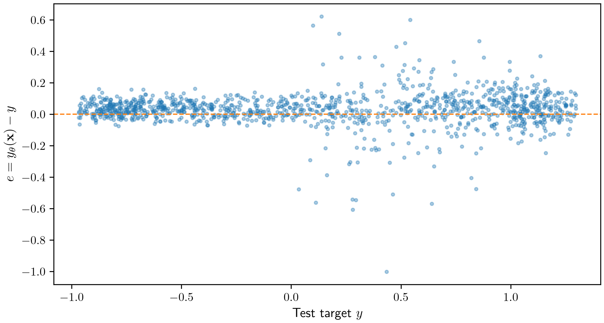

For a small, low-dimensional problem, observations and predictions can be plotted against an input coordinate, or their difference can be shown directly. The plot above shows the signed error against the observed test target, with zero indicating agreement. Trends or changing spread can reveal systematic errors or regions of poor performance. Under the stated sign convention, positive errors mean overprediction.
Direct plots become harder to interpret when inputs and outputs are high-dimensional. Componentwise errors, aggregate measures, or selected projections can help, although a projection may conceal structure in other directions.
Histograms: the distribution of prediction errors
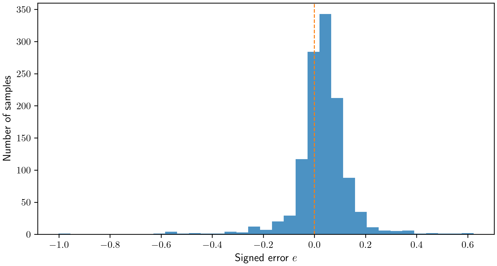

An error histogram shows how often different error ranges occur. A concentration near zero suggests many accurate predictions; long tails or isolated extreme values indicate occasional large errors. A distribution shifted away from zero can indicate systematic overprediction or underprediction. The signed errors in the histogram above retain this information; a histogram of absolute errors would conceal the sign.
Histogram appearance depends on bin width and sample count. A near-zero mean error also does not rule out systematic errors in different parts of the domain, because positive and negative errors can cancel.
Heat maps: errors in subsets of feature space
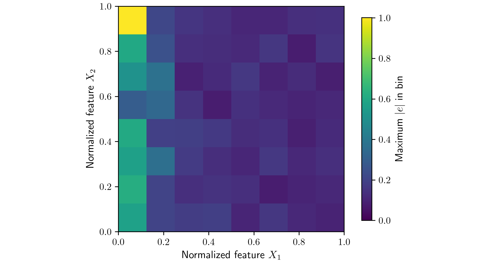
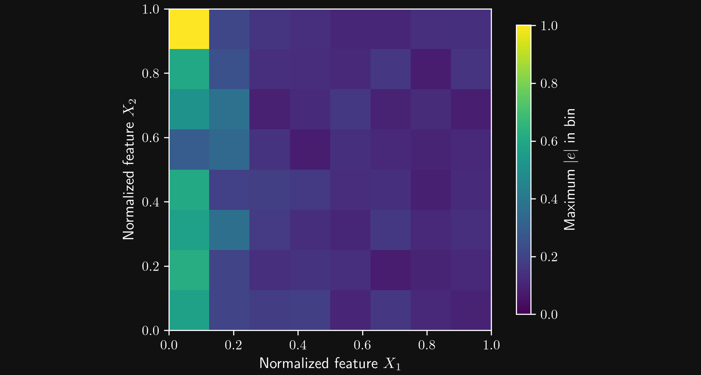
A heat map can divide two selected feature coordinates into bins and show a statistic of the prediction errors in each bin. In the heat map above, the color represents
\[ E_{jk}=\max_{i:\,\mathbf{x}_i\in B_{jk}}|e_i|, \]
where \(B_{jk}\) is a bin in the \(X_1\)–\(X_2\) plane. The elevated errors near small \(X_1\) reveal a weakness that a single average score could hide. Such a pattern may motivate additional data, a revised representation, or closer examination of the model in that region.
Maximum errors depend on individual extreme observations and on how many samples fall in a bin. Sample counts and coverage therefore matter; empty bins represent missing evidence and are left uncolored or explicitly marked, rather than assigned zero error. In a higher-dimensional feature space, a two-dimensional map groups over the remaining coordinates and can hide additional dependencies.
Observed errors require reference targets. A probabilistic model can additionally provide predictive intervals or uncertainty maps at new inputs, but their reliability is evaluated separately, for example by checking how often held-out targets lie within the stated intervals. A large error and a large predicted uncertainty are not interchangeable.